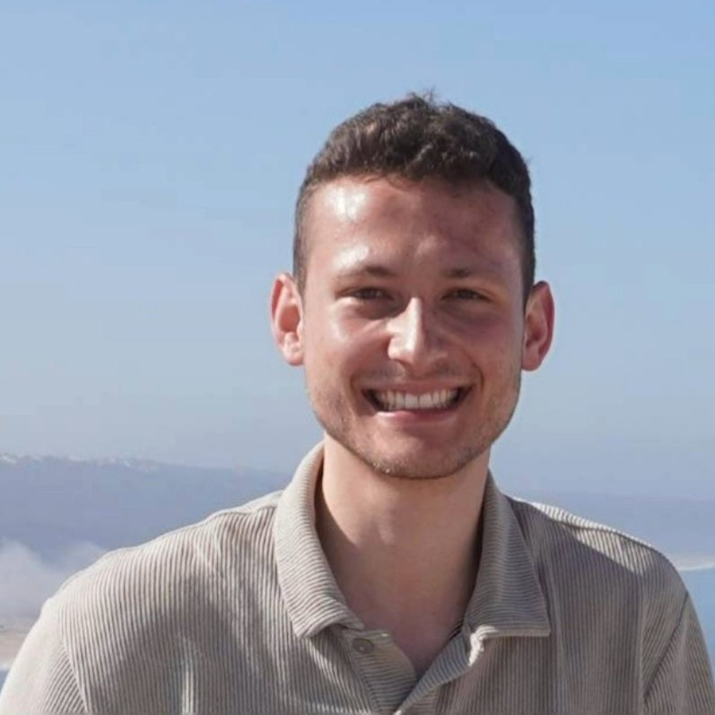

Matthias Pawlik
MSc Quantum Science and Technology (MQST) – TUM & LMU Munich
I am a physics graduate student in the joint TUM–LMU Master's program in Quantum Science and Technology. My work sits at the intersection of quantum information theory and quantum many-body physics. My academic mentor is Prof. Dr. Ignacio Cirac (MPQ).
Researching: information scrambling
Information scrambling in open quantum many-body systems
My Master's project is carried out at the Chair of Theoretical Nanophysics of Prof. Dr. Ulrich Schollwöck, supervised by Dr. Sebastian Paeckel (LMU). Scrambling describes how local information spreads over many degrees of freedom until it can no longer be recovered from any small part of the system. Real quantum systems are never perfectly isolated, so the central question is how coupling to an environment changes this spreading.
Illustrative cartoon, not simulation data: a local perturbation grows ballistically inside a light cone, $|j-j_0|\lesssim v_B\,t$. In the open system, dissipation damps the signal roughly as $e^{-\gamma t}$.
Two key objects: the Lindblad master equation for the open-system dynamics, and an operator-growth diagnostic (out-of-time-order commutator) that measures how a local operator spreads.
Research themes
Open quantum systems
How do dissipation and decoherence reshape the spreading of quantum information in many-body systems?
Tensor networks
Numerical methods for strongly correlated systems, with TeNPy and SyTen, and tensor network renormalization with semidefinite programming.
Quantum information tools
Quantum channels, exactly solvable models, and operator-spreading diagnostics.
Research path
-
Now
Master's project: information scrambling in open quantum many-body systems
-
Feb–Apr 2025
Tensor network renormalization for dissipative quantum systems
-
May–Oct 2024
Space-efficient QAOA for the Traveling Salesperson Problem
-
Oct 2023–Mar 2024
Circuits of Round-a-Face Quantum Channels: An Extension of the DUIRF Model